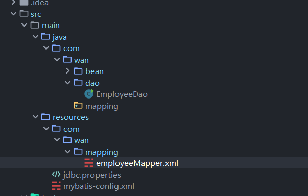

mybatis中，封装了一个sqlsession 对象（里面封装有connection对象)，由此对象来对数据库进行CRUD操作。
mybatis有一个配置的xml，用于配置数据源、映射Mapping，xml的文件名可以任取，为了方便，我们还是起mybatis-config.xml
我们读取此配置的xml，获得一个sqlsession，之后由此对象类进行数据库的CRUD操作
Reader reader = Resources.getResourceAsReader("mybatis-config.xml");
SqlSessionFactory factory = new SqlSessionFactoryBuilder().build(reader);
SqlSession sqlSession = factory.openSession();<?xml version="1.0" encoding="UTF-8" ?>
<!DOCTYPE configuration
PUBLIC "-//mybatis.org//DTD Config 3.0//EN"
"http://mybatis.org/dtd/mybatis-3-config.dtd">
<configuration>
<!-- 引入外部资源文件-->
<properties resource="jdbc.properties"/>
<!-- 配置数据源环境 -->
<environments default="development">
<environment id="development">
<!-- 数据库事务管理类型 -->
<transactionManager type="JDBC"/>
<!-- 数据源，type=pooled 说明是使用连接池方式，可以节省资源 -->
<dataSource type="POOLED">
<!-- 调用资源文件里的用户信息-->
<property name="driver" value="${jdbc.driver}"/>
<property name="url" value="${jdbc.url}"/>
<property name="username" value="${jdbc.username}"/>
<property name="password" value="${jdbc.password}"/>
</dataSource>
</environment>
</environments>
</configuration>Dao类中每次进行CRUD操作，都要执行一次openSession方法来获得SqlSession对象，造成资源的浪费和代码的重复
所以，和之前的JdbcUtil工具类一样，我们也定义定义一个工具类MyBatisUtil，用来返回SQLSession对象
static SqlSessionFactory sqlSessionFactory = null;
static {
try {
// 加载mybatis配置文件，并创建SqlSessionFactory实例
String resource = "mybatis-config.xml";
InputStream inputStream = Resources.getResourceAsStream(resource);
//这个build方法可以接受几种不同的参数，如Reader/InputSteam等
sqlSessionFactory = new SqlSessionFactoryBuilder().build(inputStream);
} catch (IOException e) {
}
}
public static SqlSession getSqlSession() {
return sqlSessionFactory.openSession();
}
public static void closeSqlSession(SqlSession sqlSession){
if (sqlSession != null) {
sqlSession.close();
}
}mapper文件放在了resources下面

Mybatis中，sql语句则是写在了xml文件中，这些xml文件也称为mapper映射文件
mapper标签如果带有xmln属性，IDEA会报解析xml错误，得把xmln属性删除
<?xml version="1.0" encoding="UTF-8" ?>
<!DOCTYPE mapper PUBLIC "-//mybatis.org//DTD Mapper 3.0//EN"
"http://mybatis.org/dtd/mybatis-3-mapper.dtd">
<!--
namespace: 命名空间，用于标识每一个Mapper XML文件中的语句，预防在不同的Mapper XML文件中存在相同的语句ID
-->
<mapper namespace="employeeMapper">
<!--
resultType: 也称为自动映射，只有在表的列名与POJO类的属性完全一致时使用，会比较方便，全类名
-->
<select id="selectAll" resultType="com.wan.bean.Employee">
select * from employee
</select>
</mapper><?xml version="1.0" encoding="UTF-8" ?>
<!DOCTYPE configuration
PUBLIC "-//mybatis.org//DTD Config 3.0//EN"
"http://mybatis.org/dtd/mybatis-3-config.dtd">
<configuration>
<!-- 省略数据源配置-->
<mappers>
<mapper resource="com/wan/mapping/employeeMapper.xml"/>
<!--如果还有mapper，则继续添加 -->
</mappers>
</configuration>SqlSession sqlSession = MybatisUtil.getSqlSession();
// 调用语句，如果有参数，传入参数
//参数为命名空间namespace+id，执行xml中的sql语句
List<Employee> list = sqlSession.selectList("employeeMapper.selectAll");PS：如果是插入、更新和删除操作，还需要提交操作,默认是不会自动提交的
sqlSession.commit();<select id="selectAll" resultType="com.wan.bean.Employee">
select * from employee
</select>resultType属性需要全类名，我们可以使用typeAliases标签来简化输入
typeAliases标签需要在mybatis-config.xml文件中进行设置
<?xml version="1.0" encoding="UTF-8" ?>
<!DOCTYPE configuration
PUBLIC "-//mybatis.org//DTD Config 3.0//EN"
"http://mybatis.org/dtd/mybatis-3-config.dtd">
<configuration>
<properties resource="jdbc.properties"/>
<!--指定一个bean包 -->
<typeAliases>
<package name="com.wan.bean"/>
</typeAliases>
<!--省略配置数据源等-->
</configuration>之后我们的mapper文件中就可以这样写
<!--resultType就可以不用写全包名 -->
<select id="selectAll" resultType="Employee">
select * from employee
</select>我这里只介绍用法，详解请看下面的参考链接
1. 文件路径注册
<mappers>
<mapper resource="com/wan/mapper/EmployeeMapper.xml" />
</mappers>2. 包名扫描注册
<mappers>
<package name="com.wan.mapper" />
</mappers>使用这种，必须保证xxxMapper.java和xxxMapper.xml两者名字一模一样！而且是要在同一包里
3. 类名注册
<mappers>
<mapper class="com.shizongger.chapter2.mapper.UserMapper" />
</mappers>4. url注册
<mappers>
<mapper url="file:/home/shizongger/workspace/Chapter3/src/com/shizongger/chapter2/mapper/RoleMapper.xml" />
</mappers>| 方法名 | 说明 |
|---|---|
| insert | 插入 |
| delete | 删除 |
| update | 更新 |
| selectOne | 查找单行结果,返回一个Object |
| selectList | 查找多行结果，返回一个List |
使用和之前一样，第一个参数传入一个namespce+id，就可以找到指定的mapper文件里面的sql语句，并执行
Employee中，属性名和表的列名对应
<select id="selectAll" resultType="Employee">
select * from employee
</select>如果属性和表的列名不一致，可以使用列名映射resultMap标签，（也就是自动转为别名）
<!--type也是需要全包名，由于之前定义的别名，所以就可以不写-->
<resultMap id="baseResultMap" type="Employee">
<!--使用映射，把对应的列名映射为对应的属性 -->
<id property="empno" column="EMPNO" />
<result property="ename" column="ENAME"/>
<result property="job" column="JOB"/>
<result property="mgr" column="MGR"/>
<result property="hiredate" column="HIREDATE"/>
<result property="sal" column="SAL"/>
<result property="comm" column="COMM"/>
<result property="deptno" column="DEPTNO"/>
</resultMap>
<!--引用上面定义的resultMap-->
<select id="selectAll" resultMap="baseResultMap">
select * from employee
</select>带条件查询
<select id="selectById" parameterType="int" resultMap="baseResultMap">
<!-- 如果参数类型是简单的基本或者包装类型，#{} 里面的可以任取，都是可以获得参数 -->
select * from EMPLOYEE where EMPNO=#{id}
</select>
//使用
Employee e = sqlsession.selectOne("employeeMapper.selectById",7369);上面的select语句相当于一个预编译语句
String s = "SELECT * FROM employee WHERE empno=?";
PreparedStatement ps = conn.prepareStatement(s);
ps.setInt(1,empno);多条件查询
可以使用where标签，当然，之前的单条件也可以使用where标签，where标签好处是会自动删除多余的and
<select id="selectSelective" parameterType="Employee" resultMap="baseResultMap">
select * from EMPLOYEE
<where>
<!--自动删除多余的and -->
<!--#相当于从传入的bean对象（Employee）中通过getDeptno方法获得属性值 -->
and deptno=#{deptno}
and sal>=2000
</where>
</select>大小比较条件
条件中有大小比较，<号得通过CDATA存放条件
<select id="selectSelective" parameterType="Employee" resultMap="baseResultMap">
select * from EMPLOYEE
<where>
<!--loSal为Employee的一个属性，#{loSal}相当于是通过Employee对象的get方法来获得loSal的属性值 -->
and SAL>=#{loSal}
<!--CDATA中的数据不会被解析器解析 -->
<![CDATA[ and SAL<=#{hiSal} ]]>
</where>
</select>#与$区别：
${}用在我们能够确定值的地方，也就是我们程序员自己赋值的地方。
而#{}一般用在用户输入值的地方！！
模糊查询：
模糊查询中需要使用%等通配符，我们可以在xml中定义好，自动拼接通配符
<select id="selectSelective" parameterType="Employee" resultMap="baseResultMap">
select * from EMPLOYEE
<where>
<if test="ename != null">
<!--使用bind标签，设置格式，自动拼接通配符 -->
<bind name="pattern" value="'%' + ename + '%'"/>
and ENAME like #{pattern}
</if>
</where>
</select>动态查询
Mybatis中提供了if标签用来实现动态查询，和JSTL标签库使用类似
<select id="selectSelective" parameterType="Employee" resultMap="baseResultMap">
select * from EMPLOYEE
<where>
<!--#{ename}其实是通过Employee类中的get方法来获得对象的ename属性值 -->
<if test="ename != null">
and ename=#{ename}
</if>
<if test="job != null and job.trim().length>0">
and JOB=#{job}
</if>
<if test="deptno != null">
and DEPTNO=#{deptno}
</if>
</where>
</select>主键为序列
某个主键是由oracle中的序列生成的
<insert id="insert_1" parameterType="Employee">
<!--
keyProperty: 表示将从序列获得的值赋予实体的哪个属性
order: 表示主键值生成的方式,可取值：BEFORE ｜ AFTER
由于不同的数据库对插入的数据时主键生成方式是不同，例如：
mysql and ms server: 主键生成方式为后生成方式。
oracle: 主键生成方式预生成.
-->
<!--调用数据库中的序列，并赋值给传入的Employee对象的empno属性 -->
<selectKey keyProperty="empno" resultType="integer" order="BEFORE">
select EMP_SEQ.nextval from dual
</selectKey>
<!--
如果使用这种整表插入的方式，那当数据库表的某些列可以为空值时，我将要告诉底层的JDBC驱动如何处理空值的情况，这不是mybatis所需要的，
而是底层有些JDBC驱动所需的特性，实际上就是让JDBC驱动去调用PrepareStatement.setNull()来设置空值
-->
<!--如果是常用的数据类型int,date等，jdbcType可以省略不写 -->
insert into EMPLOYEE
values (#{empno},#{ename},#{job},#{mgr,jdbcType=INTEGER},#{hiredate,jdbcType=DATE},#{sal,jdbcType=DOUBLE},#{comm,jdbcType=DOUBLE},#{deptno,jdbcType=INTEGER})
</insert>复用sql语句
把insert要插入的列名和数值写在sql标签里，之后方便重用，之后重用的时候需要使用include子标签拼接sql语句
<!--insert into employee(ENAME,JOB..) values(xx,xx) -->
<!--(ENAME,JOB..) -->
<sql id="insert_set_column">
<!-- suffixOverrides属性，会自动把多余的“,”删除 -->
<trim prefix="(" suffix=")" suffixOverrides=",">
empno,
<if test="ename != null">ENAME,</if>
<if test="job != null">JOB,</if>
<if test="mgr != null">MGR,</if>
<if test="hiredate != null">HIREDATE,</if>
<if test="sal != null">SAL,</if>
<if test="comm != null">COMM,</if>
<if test="deptno != null">DEPTNO,</if>
</trim>
</sql>
<!--(xx,xx,xx) -->
<sql id="insert_values">
<trim prefix="values(" suffix=")" suffixOverrides=",">
#{empno},
<if test="ename != null">#{ename},</if>
<if test="job != null">#{job},</if>
<if test="mgr != null">#{mgr},</if>
<if test="hiredate != null">#{hiredate},</if>
<if test="sal != null">#{sal},</if>
<if test="comm != null">#{comm},</if>
<if test="deptno != null">#{deptno},</if>
</trim>
</sql>
<insert id="insert_2" parameterType="Employee">
<selectKey keyProperty="empno" resultType="integer" order="BEFORE">
select EMP_SEQ.nextval from dual
</selectKey>
insert into EMPLOYEE
<!--拼接sql -->
<include refid="insert_set_column"/>
<include refid="insert_values"/>
</insert><update id="update_1" parameterType="Employee">
update EMPLOYEE
<set>
<if test="ename != null and ename.trim().length>0">ENAME=#{ename},</if>
<if test="job != null and job.trim().length>0">JOB=#{job},</if>
<if test="mgr != null">MGR=#{mgr},</if>
<if test="hiredate != null">HIREDATE=#{hiredate},</if>
<if test="sal != null">SAL=#{sal},</if>
<if test="comm != null">COMM=#{comm},</if>
<if test="deptno != null">DEPTNO=#{deptno},</if>
</set>
<!-- <where>如果带多条件的更依然可以使<where>元素动态生成where子句</where> -->
where EMPNO=#{empno}
</update><update id="update_2" parameterType="Employee">
update EMPLOYEE
<trim prefix="set" suffixOverrides=",">
<if test="ename != null and ename.trim().length>0">ENAME=#{ename},</if>
<if test="job != null and job.trim().length>0">JOB=#{job},</if>
<if test="mgr != null">MGR=#{mgr},</if>
<if test="hiredate != null">HIREDATE=#{hiredate},</if>
<if test="sal != null">SAL=#{sal},</if>
<if test="comm != null">COMM=#{comm},</if>
<if test="deptno != null">DEPTNO=#{deptno},</if>
</trim>
<!-- <where>如果带多条件的更依然可以使<where>元素动态生成where子句</where> -->
where EMPNO=#{empno}
</update><delete id="delete" parameterType="Employee">
delete EMPLOYEE EMPNO=#{empno}
<!--条件多的话也可以使用<where>...</where> -->
</delete>我们之前，上面都是在Dao类中写上一段sqlsession.selectOne/selectList，还是比较麻烦
所以mybatis提供了一种简单的方法，使用动态代理（接口类）可以简化步骤
Mybatis中有这样的约定：
满足上面的条件，Mybatis就会将接口类中的方法和mapper中的sql语句一一对应起来，而不需要再次新建一个Dao，在Dao类里面编写方法
具体步骤：
1. 实体类编写
2. 新建接口类
如果方法的返回值为void，则mapper中就不需要定义resultType属性
如果方法返回值是List，mapper中的resultType为泛型T
package com.wan.mapping;
import com.wan.bean.Employee;
import java.util.List;
/**
* @author StarsOne
* @date Create in 2019/9/16 0016 20:38
* @description
*/
public interface EmployeeMapper {
List<Employee> selectAll();
}2. 编写mapper.xml
<?xml version="1.0" encoding="UTF-8" ?>
<!DOCTYPE mapper PUBLIC "-//mybatis.org//DTD Mapper 3.0//EN"
"http://mybatis.org/dtd/mybatis-3-mapper.dtd">
<mapper namespace="com.wan.mapping.EmployeeMapper">
<!--特例：返回值为list，resultType=bean类-->
<select id="selectAll" resultType="Employee" >
select * from employee
</select>
</mapper>
3. 注册mapper
这里我们由于使用了package注册mapper，一定保证xxmapper.java和xxmapper.xml两个名字相同，大小写都要一样
保证Mapper.xml和接口的那个Mapper在相同的包路径，在mybatis配置xml文件指定
<?xml version="1.0" encoding="UTF-8" ?>
<!DOCTYPE configuration
PUBLIC "-//mybatis.org//DTD Config 3.0//EN"
"http://mybatis.org/dtd/mybatis-3-config.dtd">
<configuration>
<!--省略数据源配置 -->...
<!-- 注册SQL映射文件,在这些文件中写SQL语句 -->
<mappers>
<!--指定整个包中的全部Mapper -->
<package name="com.wan.mapper"/>
</mappers>
</configuration>4. 使用
使用还是和之前一样，获得SqlSession对象，此对象有个getMapper方法，把接口类传入，就可以回调接口的方法了
Reader reader = Resources.getResourceAsReader("mybatis-config.xml");
SqlSessionFactory factory = new SqlSessionFactoryBuilder().build(reader);
SqlSession sqlSession = factory.openSession();
EmployeeMapper mapper = sqlSession.getMapper(EmployeeMapper.class);
List<Employee> employees = mapper.selectAll();接口类中的方法名与EmployeeMapper.xml中的对应
使用：
EmployeeMapper mapper = sqlsession.getMapper(EmployeeMapper.class);
mapper.selectById(7369);Mybatis中提供了foreach标签，用于遍历
如果方法参数传入了一个List，可以使用此标签遍历，例子如下：
<!--相当于select * from employee where job in (...)) -->
<select id="selectByJobs" parameterType="list" resultMap="baseResultMap">
select * from EMPLOYEE
<where>
<foreach item="job" collection="list" open="JOB IN(" close=")" separator=",">
#{job}
</foreach>
</where>
</select>foreach标签的属性主要有 item，index，collection，open，separator，close，使用和JSTL标签里面的foreach标签差不多
| 属性名 | 说明 |
|---|---|
| item | 表示集合中每一个元素进行迭代时的别名 |
| index | 指定一个名字，用于表示在迭代过程中，每次迭代到的位置， |
| open | 表示该语句以什么开始， |
| separator | 表示在每次进行迭代之间以什么符号作为分隔 符， |
| close | 表示以什么结束。 |
关键属性：collection
参考：mybatis 中 foreach collection的三种用法
使用ThreadLocal对象,保证每个线程取出的SqlSession是同一个对象
| 方法 | 说明 |
|---|---|
| void set(Object value) | 设置当前线程的线程局部变量的值。 |
| public Object get() | 该方法返回当前线程所对应的线程局部变量。 |
| public void remove() | 将当前线程局部变量的值删除，目的是为了减少内存的占用，该方法是JDK 5.0新增的方法。 |
| protected Object initialValue() | 返回该线程局部变量的初始值，该方法是一个protected的方法，显然是为了让子类覆盖而设计的。 |
static ThreadLocal<SqlSession> threadLocal = new ThreadLocal<SqlSession>();
//设置
threadLocal.set(sqlsession);
//取出
SqlSession s = threadLocal.get();<!-- 结果集映射: 列《》属性名 -->
<resultMap id="baseResultMap" type="Employee">
<!-- 专门映射主键列 -->
<id property="empno" column="EMPNO" />
<result property="ename" column="ENAME"/>
<result property="job" column="JOB"/>
<result property="mgr" column="MGR"/>
<result property="hiredate" column="HIREDATE"/>
<result property="sal" column="SAL"/>
<result property="comm" column="COMM"/>
<result property="deptno" column="DEPTNO"/>
</resultMap>
<!-- 扩展另一个结果映射 -->
<resultMap id="extendBaseResultMap" type="Employee" extends="baseResultMap">
<association property="department" javaType="Department">
<!-- 关联的嵌套结果 -->
<id property="deptno" column="DEPTNO"/>
<result property="dname" column="DNAME"/>
<result property="location" column="LOC"/>
</association>
</resultMap>
<!--
1.嵌套结果（推荐使用）
优点：性能好，一条语句把所有实体的数据完全查询出来。
缺点：对SQL编写的要求高了,因为涉及多表连接查询
-->
<select id="selectById" resultMap="extendBaseResultMap" parameterType="int">
select e.EMPNO,
e.ENAME,
e.JOB,
e.MGR,
e.HIREDATE,
e.SAL,
e.COMM,
d.DEPTNO,
d.DNAME,
d.LOC
from EMPLOYEE E
inner join DEPARTMENT D
on E.DEPTNO = D.DEPTNO
where E.EMPNO=#{id}
</select>
<!--
2. 嵌套查询
优点：编写SQL简单，无需做多表的连接查询；关联的实体通过单独的SQL语句查询并单独封装。
缺点：执行了N+1条件语句。性能差
-->
<resultMap id="extendBaseResultMap_2" type="Employee" extends="baseResultMap">
<association property="department" column="DEPTNO" select="selectDepartmentById" />
</resultMap>
<select id="selectDepartmentById" parameterType="int" resultType="Department">
select deptno,
dname,
loc as location
from DEPARTMENT where DEPTNO=#{id}
</select>
<select id="selectById_2" resultMap="extendBaseResultMap_2" parameterType="int">
select e.EMPNO,
e.ENAME,
e.JOB,
e.MGR,
e.HIREDATE,
e.SAL,
e.COMM,
e.DEPTNO
from EMPLOYEE E
where E.EMPNO=#{id}
<!-- or e.empno=7902 or e.empno=7844 -->
</select>分页的话，像以前那样使用三层嵌套查询也可以实现。
不过，有开发者为Mybatis开了个一个插件PageHelper，可以用来更为简单地使用分页查询
1.添加jar包
<dependency>
<groupId>com.github.pagehelper</groupId>
<artifactId>pagehelper</artifactId>
<!--自动下载最新版本 -->
<version>REALSE</version>
</dependency>2.配置拦截器插件
<!--
plugins在配置文件中的位置必须符合要求，否则会报错，顺序如下:
properties?, settings?,
typeAliases?, typeHandlers?,
objectFactory?,objectWrapperFactory?,
plugins?,
environments?, databaseIdProvider?, mappers?
-->
<plugins>
<!-- com.github.pagehelper为PageHelper类所在包名 -->
<plugin interceptor="com.github.pagehelper.PageInterceptor">
<!-- 使用下面的方式配置参数，后面会有所有的参数介绍 -->
<property name="param1" value="value1"/>
</plugin>
</plugins>3.代码使用
只有在查询之前调用过startPage或者是offsetPage方法，后面的查询出来的List结果就会进行分页查询
下面的两个都是查询第一页，每一页有10条数据
//第二种，Mapper接口方式的调用，推荐这种使用方式。
PageHelper.startPage(1, 10);
List<Employee> employees = employeeMapper.selectAll();
//第三种，Mapper接口方式的调用，推荐这种使用方式。
PageHelper.offsetPage(1, 10);
List<Employee> employees = employeeMapper.selectAll();这里提一下，这个插件还带有一个PageInfo类，里面有可以记录各种信息
刚开始，我以为是和我之前自己封装的Page一样，详情请看Jsp学习笔记（4）——分页查询
但是，其实不一样的，这个PageInfo就是一个封装而已，只是用来存放数据而已，里面有各种信息
| 属性 | 说明 |
|---|---|
| pageNum | 当前页号（第几页） |
| pageSize | 每页的显示的数据个数 |
| size | 当前页的显示的数据个数 |
| startRow | 当前页面第一个元素在数据库中的行号 |
| endRow | 当前页面最后一个元素在数据库中的行号 |
| pages | 总页数 |
| prePage | 上一页的页号 |
| nextPage | 下一页页号 |
| isFirstPage | 是否为第一页 |
| isLastPage | 是否为最后一页 |
| hasPreviousPage | 是否有前一页 |
| hasNextPage | 是否有下一页 |
| navigatePages | 导航页码数 |
| navigatepageNums | 所有导航页号 |
| navigatePages | 导航条上的第一页 |
| navigateFirstPage | 导航条上的第一页 |
| navigateLastPage | 导航条上的最后一页 |
有个getTotal方法，可以获得查询结果的总记录数
PageHelper.startPage(1, 10);
List<Employee> employees = mapper.selectAll();
PageInfo<Employee> pageInfo = new PageInfo<>(employees);